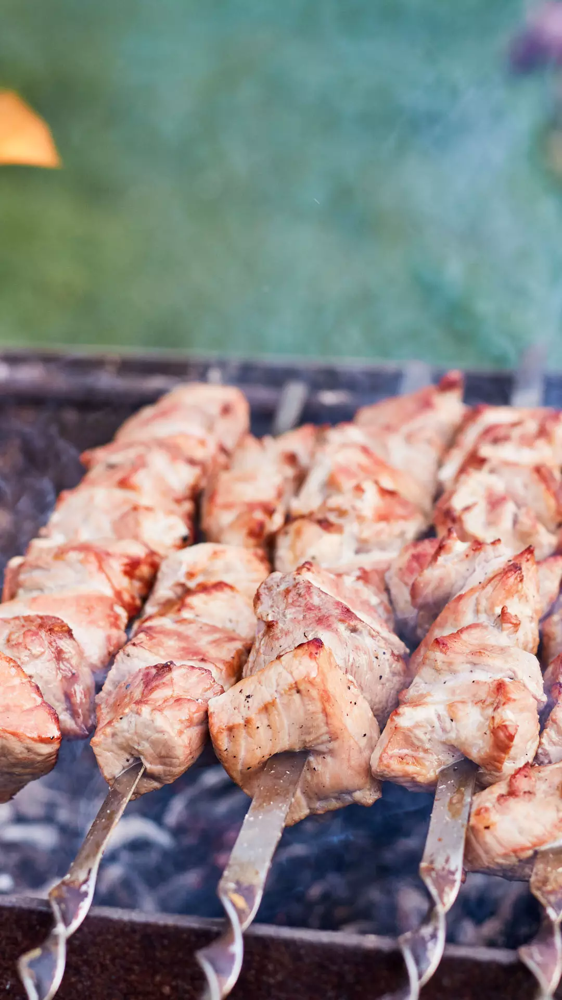

Located at the crossroads of Eastern Europe and Western Asia, Georgia is a country of stunning
landscapes and rich history. Bordered by Russia, Turkey, Armenia, and Azerbaijan, its diverse
geography includes the towering Caucasus mountains, lush valleys, and the scenic Black Sea coast.
Known for its ancient churches, medieval fortresses, and warm hospitality, Georgia uniquely blends
old-world charm with modern vibrancy. From its famous wine culture to traditional supra feasts,
Georgia offers visitors a captivating mix of tradition, nature, and warm-hearted people.
1.top destinations
2.traditional georgian kitchen
3.festivals and events
4.Georgian Culture and Traditions
5.Travel Tips
1.tbilisi
Narikala Fortress, Old Town, sulfur baths, and modern Bridge of Peace.
Why Visit:Tbilisis charming streets, historic architecture,
and vibrant art scene make it a must-see.

2. Kazbegi National Park
Mount Kazbek, Gergeti Trinity Church.
why visit:Breathtaking mountain views and popular trekking routes.

3. Svaneti
Mestia, Ushguli, ancient Svan towers.
why visit: A remote, mountainous area with
stunning landscapes and preserved medieval towers.

4. Batumi
Seaside Bulvari, Botanical Garden, Batumi Piazza.
why visit:Known for its Black Sea beaches and
unique mix of modern and traditional architecture.

5. Kakheti
Signagi, Alaverdi Monastery, Telavi.
why visit:Georgias main wine region,
with a tradition dating back 8,000 years.
1. Khachapuri:A cheese-filled bread, often shaped like a boat with an egg yolk on top.
2. Khinkali: Georgian dumplings filled with meat, vegetables, or cheese.
3. Mtsvadi: Skewered and grilled meat, often enjoyed during gatherings.
4. Churchkhela: A traditional candy made of grape juice and nuts.
Tbilisoba (October): Tbilisis annual city celebration with music, dance, and food.
Rtveli (September): The grape harvest festival celebrated mainly in Kakheti.
Alilo (January 7): Traditional Orthodox Christmas parade.
Shrovetide (February/March): Known as “Berikaoba,” a festive tradition with masks and dances.
Polyphonic Singing: Georgias unique vocal style, recognized as a UNESCO Intangible Cultural Heritage.
Hospitality: Georgians are known for their generosity and warm welcomes.
Supras (Traditional Feasts): Supras are an essential part of Georgian culture, involving large gatherings and toasts led by a Tamada (toastmaster).
Religion: Orthodox Christianity is a significant aspect of Georgian identity, with ancient churches and monasteries spread across the country.

Language: Georgian, with a unique alphabet; Russian and English are also spoken in tourist areas.
Currency: Georgian Lari (GEL).
Getting Around: Taxis, trains, and minibuses (marshrutkas) are common modes of transport.
Best Time to Visit: Spring (April to June) and autumn (September to October) for pleasant weather.